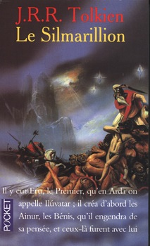
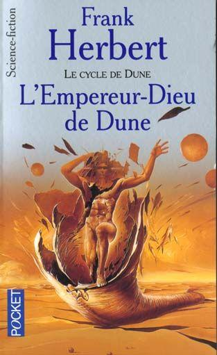

|

|
le Silmarillion, par J. R. R. Tolkien
Au Premier Age du Monde...
Sur les riches Terres du Milieu régnent la paix et l'harmonie entre les Demi-dieux, les Elfes et les Hommes...
Jusqu'au jour où Faënor, le très beau et très habile Prince des Elfes, crée de ses mains trois joyaux étincelants et magiques : les Silmarils. Qui font naître en lui une passion si folle qu'il en interdit la vue à quiconque, les cache au plus secret de sa forteresse.
Il ignore encore que Morgoth, Demi-dieu déchu, féroce et jaloux, convoite son trésor et va mettre tout en œuvre pour le conquérir. Dressant entre eux frères et amis, semant la terreur, s'alliant enfin avec Ungoliant, la grande araignée dévoreuse de lumière...
Les Ténèbres bientôt recouvrent les Terres du Milieu...
|
|

|
Dune, par Frank Herbert
Sur Dune, la planète des sables, germe l'épice qui donne longévité et prescience. A cause de l'épice, tout l'empire galactique du Padishah Shaddam IV tourne autour de Dune, âprement convoitée pour les nobles maisons du Landsraad et la Guilde des Navigateurs.
Leto Atreides, Duc et Cousin de l'Empereur, a reçu Dune en fief. Pour peu de temps. En 10191, il meurt assassiné. Mais son fils Paul, avec sa mère, trouve asile dans les repaires du peuple Fremen, indompté, invaincu, la lie de Dune pour certains, le sel de la terre pour d'autres. Paul grandit dans le désert et forge l'arme de sa vengeance.
Mais ne va-t-il pas dépasser son but, lancer les légions Fremen en une effroyable croisade ? Il a, dit-on, le pouvoir de connaître l'avenir. Aura-t-il celui de l'éviter ?
|

|
Les Guerriers du Silence, par Pierre Bordage
Quelques cent mondes composent la Confédération de Naflin, parmi lesquels la somptueuse et raffinée Syracusa. Or, dans l'ombre de la famille régnante, les mystérieux Scaythes d'Hyponéros, venus d'un monde lointain, doués d'inquiétants pouvoirs psychiques, trament un gigantesque complot dont l'instauration d'une dictature sur la Confédération ne constitue qu'une étape.
Qui pourrait donc leur faire obstacle ? Les moines guerriers de l'Ordre Absourate ? Ou faudrait-il compter avec cette obscur employé d'une compagnie de voyage qui noie son ennui dans l'alcool sur la planète Deux-Saisons ? Car sa vie bascule le jour où une belle Syracusaine, traquée, passe la porte de son agence...
|